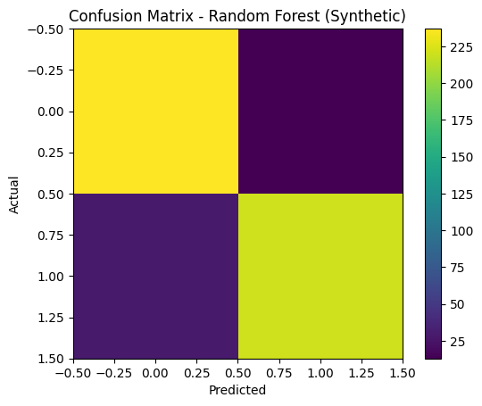
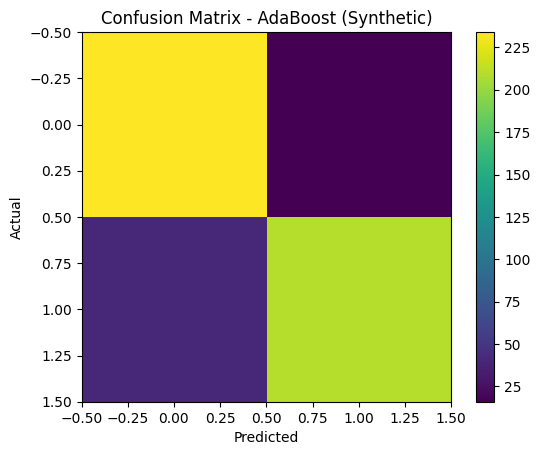
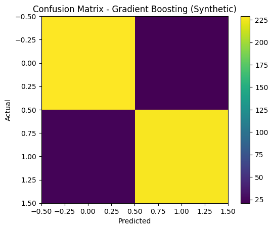
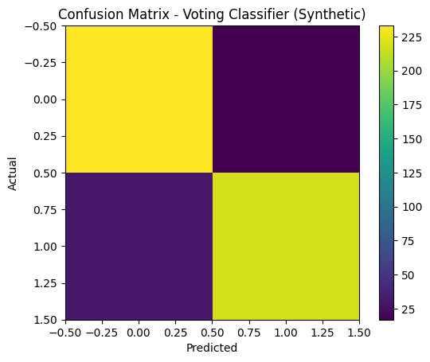
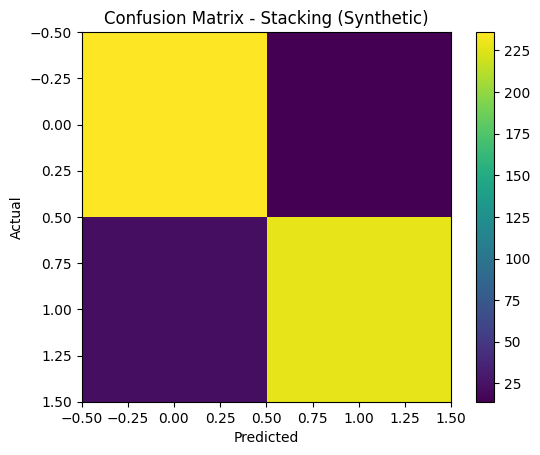

Ensemble Learning#
Course: Machine Learning Tools: Python (scikit-learn, numpy, pandas, matplotlib)
Notebook ini berisi contoh implementasi dan eksperimen singkat untuk teknik ensemble: Bagging / Random Forest, Boosting (AdaBoost, Gradient Boosting), Voting, dan Stacking.
0 — Setup#
Pastikan paket yang diperlukan terinstal. Cell berikut mencoba menginstal paket bila belum ada.
# Jika perlu, uncomment dan jalankan baris instalasi ini.
# !pip install scikit-learn matplotlib pandas numpy xgboost
import importlib
required = ["sklearn", "matplotlib", "pandas", "numpy"]
missing = [p for p in required if importlib.util.find_spec(p) is None]
print("Missing packages (if empty, all present):", missing)
Missing packages (if empty, all present): []
1 — Imports dan util function#
Load library umum dan fungsi util untuk evaluasi.
import numpy as np, pandas as pd, matplotlib.pyplot as plt
from sklearn.model_selection import train_test_split, cross_val_score
from sklearn.datasets import load_iris, make_classification
from sklearn.metrics import accuracy_score, classification_report, confusion_matrix
from sklearn.linear_model import LogisticRegression
from sklearn.ensemble import RandomForestClassifier, AdaBoostClassifier, GradientBoostingClassifier, VotingClassifier, StackingClassifier
from sklearn.tree import DecisionTreeClassifier
from sklearn.svm import SVC
2 — Iris & Synthetic binary#
Kita akan gunakan dataset Iris untuk contoh multiclass dan dataset sintetik untuk contoh binary (lebih realistis untuk boosting/voting experiments).
# Iris dataset (multiclass)
iris = load_iris()
X_iris = iris.data
y_iris = iris.target
# Synthetic binary dataset (balanced)
X_syn, y_syn = make_classification(n_samples=2000, n_features=20, n_informative=6, n_redundant=2,
n_clusters_per_class=2, weights=[0.5,0.5], random_state=42)
# Train/test split
Xir_train, Xir_test, yir_train, yir_test = train_test_split(X_iris, y_iris, test_size=0.2, random_state=42, stratify=y_iris)
Xsyn_train, Xsyn_test, ysyn_train, ysyn_test = train_test_split(X_syn, y_syn, test_size=0.25, random_state=42, stratify=y_syn)
print('Iris shape:', X_iris.shape, ' Synthetic shape:', X_syn.shape)
Iris shape: (150, 4) Synthetic shape: (2000, 20)
3 — Random Forest (Bagging)#
Random Forest sebagai contoh bagging: paralel training banyak decision tree dengan subset fitur acak.
rf = RandomForestClassifier(n_estimators=100, random_state=42)
# Small helper to show metrics
def evaluate_model(model, X_train, X_test, y_train, y_test, name=None):
model.fit(X_train, y_train)
preds = model.predict(X_test)
acc = accuracy_score(y_test, preds)
print(f"== Results: {name or model.__class__.__name__} ==")
print("Accuracy:", round(acc, 4))
print("Classification report:\n", classification_report(y_test, preds))
cm = confusion_matrix(y_test, preds)
print("Confusion matrix:\n", cm)
return acc, cm, preds
acc_rf, cm_rf, preds_rf = evaluate_model(rf, Xsyn_train, Xsyn_test, ysyn_train, ysyn_test, name='RandomForest (synthetic)')
# Plot confusion matrix (single plot — matplotlib)
plt.figure()
plt.imshow(cm_rf, interpolation='nearest')
plt.title('Confusion Matrix - Random Forest (Synthetic)')
plt.xlabel('Predicted')
plt.ylabel('Actual')
plt.colorbar()
plt.show()
== Results: RandomForest (synthetic) ==
Accuracy: 0.916
Classification report:
precision recall f1-score support
0 0.89 0.95 0.92 250
1 0.94 0.88 0.91 250
accuracy 0.92 500
macro avg 0.92 0.92 0.92 500
weighted avg 0.92 0.92 0.92 500
Confusion matrix:
[[237 13]
[ 29 221]]

4 — AdaBoost (Boosting)#
Contoh AdaBoost dengan base estimator default (DecisionTree stump).
ada = AdaBoostClassifier(n_estimators=100, learning_rate=0.8, random_state=42)
acc_ada, cm_ada, preds_ada = evaluate_model(ada, Xsyn_train, Xsyn_test, ysyn_train, ysyn_test, name='AdaBoost (synthetic)')
plt.figure()
plt.imshow(cm_ada, interpolation='nearest')
plt.title('Confusion Matrix - AdaBoost (Synthetic)')
plt.xlabel('Predicted')
plt.ylabel('Actual')
plt.colorbar()
plt.show()
== Results: AdaBoost (synthetic) ==
Accuracy: 0.888
Classification report:
precision recall f1-score support
0 0.85 0.94 0.89 250
1 0.93 0.84 0.88 250
accuracy 0.89 500
macro avg 0.89 0.89 0.89 500
weighted avg 0.89 0.89 0.89 500
Confusion matrix:
[[234 16]
[ 40 210]]

5 — Gradient Boosting#
Menggunakan GradientBoostingClassifier dari scikit-learn.
gb = GradientBoostingClassifier(n_estimators=100, learning_rate=0.1, random_state=42)
acc_gb, cm_gb, preds_gb = evaluate_model(gb, Xsyn_train, Xsyn_test, ysyn_train, ysyn_test, name='GradientBoosting (synthetic)')
plt.figure()
plt.imshow(cm_gb, interpolation='nearest')
plt.title('Confusion Matrix - Gradient Boosting (Synthetic)')
plt.xlabel('Predicted')
plt.ylabel('Actual')
plt.colorbar()
plt.show()
== Results: GradientBoosting (synthetic) ==
Accuracy: 0.912
Classification report:
precision recall f1-score support
0 0.91 0.92 0.91 250
1 0.92 0.91 0.91 250
accuracy 0.91 500
macro avg 0.91 0.91 0.91 500
weighted avg 0.91 0.91 0.91 500
Confusion matrix:
[[229 21]
[ 23 227]]

6 — Voting Classifier#
Soft voting dari beberapa classifier (LogisticRegression, DecisionTree, SVC). Perhatikan SVC membutuhkan probability=True jika ingin soft voting.
lr = LogisticRegression(max_iter=200)
dt = DecisionTreeClassifier()
svc = SVC(probability=True)
voting = VotingClassifier(estimators=[('lr', lr), ('dt', dt), ('svc', svc)], voting='soft')
acc_voting, cm_voting, preds_voting = evaluate_model(voting, Xsyn_train, Xsyn_test, ysyn_train, ysyn_test, name='Voting (soft)')
plt.figure()
plt.imshow(cm_voting, interpolation='nearest')
plt.title('Confusion Matrix - Voting Classifier (Synthetic)')
plt.xlabel('Predicted')
plt.ylabel('Actual')
plt.colorbar()
plt.show()
== Results: Voting (soft) ==
Accuracy: 0.904
Classification report:
precision recall f1-score support
0 0.88 0.93 0.91 250
1 0.93 0.88 0.90 250
accuracy 0.90 500
macro avg 0.91 0.90 0.90 500
weighted avg 0.91 0.90 0.90 500
Confusion matrix:
[[233 17]
[ 31 219]]

7 — Stacking Classifier#
Stacking: gabungkan prediksi model dasar dan latih meta-estimator (di sini LogisticRegression).
estimators = [
('rf', RandomForestClassifier(n_estimators=50, random_state=42)),
('gb', GradientBoostingClassifier(n_estimators=50, random_state=42)),
('dt', DecisionTreeClassifier())
]
stack = StackingClassifier(estimators=estimators, final_estimator=LogisticRegression(), cv=5)
acc_stack, cm_stack, preds_stack = evaluate_model(stack, Xsyn_train, Xsyn_test, ysyn_train, ysyn_test, name='Stacking (synthetic)')
plt.figure()
plt.imshow(cm_stack, interpolation='nearest')
plt.title('Confusion Matrix - Stacking (Synthetic)')
plt.xlabel('Predicted')
plt.ylabel('Actual')
plt.colorbar()
plt.show()
== Results: Stacking (synthetic) ==
Accuracy: 0.928
Classification report:
precision recall f1-score support
0 0.91 0.94 0.93 250
1 0.94 0.91 0.93 250
accuracy 0.93 500
macro avg 0.93 0.93 0.93 500
weighted avg 0.93 0.93 0.93 500
Confusion matrix:
[[236 14]
[ 22 228]]

8 — Cross-validation comparison#
Perbandingan sederhana dengan cross-validation pada synthetic dataset (5-fold).
models = {
'RandomForest': RandomForestClassifier(n_estimators=100, random_state=42),
'AdaBoost': AdaBoostClassifier(n_estimators=100, random_state=42),
'GradientBoosting': GradientBoostingClassifier(n_estimators=100, random_state=42),
'Voting': VotingClassifier(estimators=[('lr', LogisticRegression(max_iter=200)), ('dt', DecisionTreeClassifier()), ('svc', SVC(probability=True))], voting='soft'),
'Stacking': StackingClassifier(estimators=[('rf', RandomForestClassifier(n_estimators=50, random_state=42)), ('gb', GradientBoostingClassifier(n_estimators=50, random_state=42))], final_estimator=LogisticRegression(), cv=5)
}
cv_results = {}
for name, model in models.items():
print('Running CV for', name)
scores = cross_val_score(model, X_syn, y_syn, cv=5, scoring='accuracy', n_jobs=1)
cv_results[name] = scores
print('Scores:', scores, ' Mean:', scores.mean())
Running CV for RandomForest
Scores: [0.9175 0.9425 0.9025 0.93 0.91 ] Mean: 0.9205
Running CV for AdaBoost
Scores: [0.89 0.8775 0.875 0.9 0.8825] Mean: 0.885
Running CV for GradientBoosting
Scores: [0.9025 0.9175 0.9 0.9325 0.9175] Mean: 0.914
Running CV for Voting
Scores: [0.8825 0.92 0.895 0.92 0.895 ] Mean: 0.9024999999999999
Running CV for Stacking
Scores: [0.905 0.9425 0.905 0.93 0.92 ] Mean: 0.9205000000000002
9 — Kelebihan & Kekurangan#
Kelebihan:
Meningkatkan akurasi
Robust terhadap noise
Bisa mengurangi bias/variance tergantung metode
Kekurangan:
Training lebih lama / resource intensive
Interpretasi model lebih sulit
Memerlukan tuning hyperparameter
10 — Further reading & practical tips#
Coba GridSearchCV / RandomizedSearchCV untuk tuning hyperparameter
Untuk data besar, gunakan LightGBM / XGBoost (lebih cepat) — perlu instalasi tambahan
Perhatikan imbalance class; gunakan stratify pada split atau teknik balancing (SMOTE, class_weight, dll.)
Selesai. Notebook ini cocok dijalankan di Jupyter / Colab. Kamu bisa menambahkan visualisasi lebih kaya atau cell interaktif jika perlu.